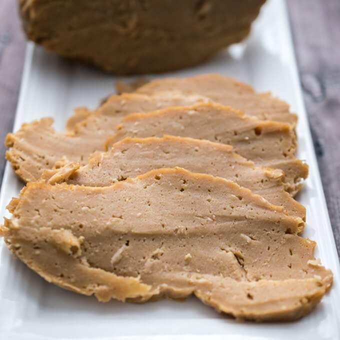

"Better Than Chicken" Seitan!

Description
Seitan is a staple for any vegan body builder.
Get those gaaaaaaaainnnnnssss!
Ingredients You'll Need:
- 3/4 cup wheat gluten
- 1/4 cup flour
- 1/4 cup nutritional yeast
- 1 teaspoon garlic powder
- 1 teaspoon onion powder
- 3/4 cups water
Steps To Make The Dish:
- Add wheat gluten, flour, nutritional yeast and spices to a bowl
- Get 3/4 cup of water and add it to mixing bowl
- Mix ingredients till uniform
- let loaf rest 30 minutes
- steam 30 minutes
- Enjoy!